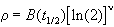
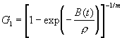
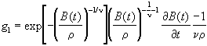

Parametric Analysis of
Time-Related Events: Procedures
The Cleveland Clinic Foundation.[1]
TABLE OF CONTENTS
Special Case 1: Delay before constantly rising hazard
Special Case 3: Gompertz Model
Data Definitions and Considerations
Computational Reparameterization
Initial Parameter Specification
ABSTRACT
Two SASÒ-interfaced procedures, PROC HAZARD and PROC HAZPRED, are described. These procedures constitute an analysis system for generalized completely parametric censored-data analysis and display. They utilize the scheme of decomposition of the distribution of times to an event (or of any positive variable) into up to 3 overlapping phases of hazard (competing risks),[2] each phase scaled by a parametric function of concomitant variables.[3] The equations and general methods for using the procedures are given in this overview, while details of syntax are given in the subsequent two documents specifying the procedures.
INTRODUCTION
This section reviews two procedures that are useful for analyzing the distribution of times until an event and of factors influencing that distribution: HAZARD and HAZPRED. The purposes of these procedures are as follows:
|
HAZARD |
To build the model and estimate shaping and regression parameters |
|
HAZPRED |
To make predictions of the survivorship and hazard functions and their confidence limits, given a model specification, a set of parameter estimates from the HAZARD procedure, and an observation consisting of a time and values for variables within the model. |
Although the parametric models described are functions of the distribution of times until an event, the modeling procedure is applicable to any positive valued variable, such as height or weight, length of hospital stay, or cost. In this setting, the procedure may be particularly important for its handling of incomplete information. For example weight data may have values known only to be greater than a stated number, the data may be interval histogram data that herein are handled as interval censored observations, or costs may be known only to be greater than a specific amount, perhaps because the patient at that point died.
The model and procedure is also generalized by means of a WEIGHT statement to encompass data that at the time of an event have a variable, measured response. For example, the data may relate to times until a morbid event whose consequences can be expressed on an ordinal scale of severity, or the data may be device repair times for which a repair cost is associated.
The model is also generalized in this version to include a left censoring time (starting time). While left censoring in biomedical applications of strictly survival analysis is not commonly employed, in fact the implicit use of left censoring is importantly general for the analysis of repeated events and a broad, specific class of time-varying covariables (see Kalbfleish and Prentice 1980). Specifically, the longitudinal history of an individual can be divided into multiple epochs, each ending at the time of recurrence of a repeating morbid event. Each epoch becomes an individual SASÒ observation, with a starting time (left censoring time) and an ending (event or censoring) time. Similarly, the longitudinal record can be segmented according to discrete changes in a time-varying covariable. This also can be expressed in terms of left censoring. Thus, the addition of left censoring expands the capabilities of the procedures beyond those of the previous program that only could accommodate repeated events that were modeled as a modulated renewal process (see Kalbfleish and Prentice 1980), with starting time set to 0 for each epoch.
An important aspect of the procedure is the tools it provides the user for variable selection in multivariable analyses. Unlike any other procedure we have encountered, selection control directly accompanies each variable. This requires regular SAS users to violate one of their ingrained habits: use of the space character to delimit variables. This procedure uses a comma, since variable control information is “packaged” after each variable up until the next comma (or the traditional statement-end semicolon). Among the tools available is the ability to select and include variables, order the selection process, exclude a set of variables once one of a set enters the model, specify starting values with a simple variable=value syntax, and use of stepwise variable selection by a variety of forward and backward methods. In addition, variables outside the model are presented with first approximation signed regression coefficients, standard deviations, and P-values, so that the investigator can ascertain the appropriate influence of variables already in the model on those not yet entered.
BACKGROUND
The procedures are an application of parametric distributional analysis with or without concomitant information. The procedures were developed to provide a general, mathematically tractable, statistically robust system of parametric survival distribution equations that would be applicable to a wide range of possible survival distribution shapes. Thus:
· The model belongs to the class of parametric survival models known as mixture distribution or competing risks models. The distribution of events can be considered as a mixture of as many as three competing distribution models called in this documentation “phases.” Although all phases are defined over all time, each phase predominates in only one time frame and, therefore, can be expressed in rather simple form with few estimated parameters.
· Each phase consists of a parametric shaping distribution function scaled by a parametric scaling function of concomitant information.
· Each shaping distribution function is a generic one that can be thought of as giving rise to a set of nested hierarchical submodels, with the simplest one that adequately fits the distribution being the one sought. Thus, many of the parametric models currently in use are either submodels of the system used in this procedure or can be approximated closely with one.
· Each phase incorporates a separate stream of concomitant information (risk factors). These are modeled as a log-linear (proportional hazards) parametric scaling function for each phase.[4] The scaling parameter has been selected as the one most sensitive to concomitant information.
· The mathematical form of the model has been developed with considerable care to give it attractive statistical and mathematical properties for maximum-likelihood estimation.[5]
· Although the detail of the full system of equations designed to accommodate a very wide range of possible distribution shapes is of necessity complex, the specific distribution model developed for a set of data is usually a simple one with few shaping parameters.
Parametric analysis of time-related events is covered by a number of books on survival analysis (e.g. Gross and Clark 1975, Elandt-Johnson and Johnson 1980, Kalbfleish and Prentice 1980, Lee 1980, and Cox and Oakes 1984). Among the common distributions considered are the exponential, Weibull, Rayleigh, Gompertz, and Makem-Gompertz. The HAZARD procedure provides a flexible, hierarchical family of distributions that include these distributions as special cases (see Table 1) and many more. The forms of possible models available in the procedure are listed in the next section, The Parametric Model. It will be seen, for example, that the so-called early hazard phase model is that of an improper distribution, useful for data with high censoring prevalence, and the so-called late phase model is that of a proper distribution function.[6]
Few authors have considered concomitant information in the context of parametric analysis. One of the early approaches (Feigl and Zelen 1965) using the exponential can be used with this procedure except that the constant hazard parameter is modeled as a log-linear function (Glass 1967), rather than as a linear function, of concomitant variables. For examples of our own medical applications of the procedures, see Blackstone and Kirklin (1985), Blackstone (1986), Blackstone, Naftel, and Turner (1986), Kirklin, Blackstone, and Rogers (1985), Kirklin and Barratt-Boyes (1096), and McGrath and colleagues (1985).
The system of analysis implemented by the HAZARD procedure can also be thought of as an extension of Cox’s proportional hazard model regression (Cox 1972). Semiparametric proportional hazard model regression employs a single log-linear function of the concomitant information as a scale function for an underlying and unspecified hazard function. Such an analysis assumes of proportional hazards since the scale function modifies the underlying hazard proportionately across all time. The HAZARD procedure differs in two important ways from proportional hazard regression:
· When multiple phases of hazard are resolved from the distribution of an event, different risk factors may appear in each phase. Thus, the influence of a specific risk factor on hazard will vary across time, depending upon the time-related predominance of the hazard phase into which that variable is incorporated.
· The underlying hazard is a specified distribution with estimated parameters. Therefore, graphical or numerical displays of solutions to the system of equations for survival and hazard at a specific time for a set of risk factor values is possible. The HAZARD procedure coupled with the HAZPRED procedure can be used to exploit this major advantage of parametric analysis, including predictions demonstrating the effect of risk factors and demonstrating periods of high (or changing) risk.
Table 1 Implementation of Some Common Survival
Distributions that are
Special
Cases Of the General Model
|
Distribution |
Hazard Function |
Phase(s) |
Specifications |
|
exponential |
m1 |
constant |
|
|
Rayleigh |
m1 + m22t |
constant + late |
FIXGE2 FIXGAE2 (see Note 1) |
|
Generalized Weibull |
see late phase equations |
late |
WEIBULL |
|
Weibull |
m3hth-1 |
late |
WEIBULL GAMMA=1 FIXGAMMA ALPHA=1 FIXALPHA (see Note 2) |
|
Gompertz |
m3e(t/t)/t |
late |
WEIBULL GAMMA=1 FIXGAMMA ALPHA=0 FIXALPHA ETA=1 FIXETA |
|
Makem-Gompertz |
m2 + m3 e(t/t)/t |
constant + late |
WEIBULL GAMMA=1 FIXGAMMA ALPHA=0 FIXALPHA ETA=1 FIXETA |
Note 1: This specification results in t=1, g=1, a=1, and h=2.
Note 2: If h is fixed at 1, then the Weibull reduces to a constant hazard.
THE PARAMETRIC MODEL
Overall Model
The parametric model is conceptualized in the cumulative hazard (L) domain as the sum of as many as three phases:
|
|
(1) |
where t is time, mj is the log-linear parametric scaling function of concomitant information, and Gj is the parametric shaping function for each of the three phases.
The hazard function l is the time derivative of the cumulative hazard function
|
|
(2) |
where gj is the time derivative of the shaping function Gj for each of the phases.
The survivorship function S is derived from the cumulative hazard function as
|
|
(3) |
The death density function (probability density function) is the product of the survivorship and hazard functions.
Each of the phases and its shaping functions, expressed both in the cumulative hazard domain and the hazard domain, is discussed in one of the following sections.
Early Hazard Phase Model
The general early hazard phase parametric shaping model, expressed in terms of cumulative hazard G1 is
|
|
(4) |
|
|
(5) |
t>0, -1<d<1, r>0, n and m unbounded.
This model is based on the model of mortality developed by Turner and his colleagues (1982). The important features are that G1(t) approaches zero as t approaches zero, and G1(t) monotonically approaches one as t approaches infinity. Since early cumulative hazard is the product of m1 (designated as MUE in PROC HAZARD) and G1(t), this early phase is assumed to be transient, accounting for a cumulative risk of m1 and therefore 1-exp(-m1) of the total probability of the event. It is thus the description of an improper distribution function.
The general model can be reexpressed in terms of three generic models, each with a limiting exponential case. The limiting exponential cases are derived from the general relationship
Thus, the model parameter definitions are altered to accommodate there limiting cases.[7]
In addition to the model parameters, the computational parameter t1/2 is introduced, which aids in both the mathematical tractability of the model by orthogonalization and in making initial parameter guesses. The parameter t1/2 is the time to 1/2 early phase cumulative hazard and is the computational parameter substituted for model parameter r.
While G1(t) approaches 0 as t approaches 0, its first derivative (the hazard function g1(t)) at that point may approach zero, infinity, or a finite number. When the hazard function approaches a finite number at time zero, its confidence limits often widen unaesthetically about that point unless the exponents m and n are fixed to values that generate an equation form that always has a finite value for the hazard funtion as t approaches zero. To facilitate this, PROC HAZARD permits an option FIXMNU1 that fixes the relation between these shaping such that a finite intercept at time zero is achieved. Footnotes below indicate what you should expect.
m>0, n>0 Generic Model[8]
|
|
(6) |
|
|
(7) |
|
|
(8) |
Limiting Case 1: m=0, n>0[9]
|
|
(9) |
|
|
(10) |
|
 |
(11) |
m<0, n>0 Generic Model[10]
|
|
(12) |
|
|
(13) |
|
|
(14) |
Limiting Case 2: m<0, n=0
|
 |
(15) |
|
|
(16) |
|
|
(17) |
m>0, n<0 Generic Model[11]
|
|
(18) |
|
|
(19) |
|
|
(20) |
Limiting Case 3: m=0, n<0
|
|
(21) |
|
 |
(22) |
|
|
(23) |
Constant Hazard Phase Model
The constant hazard phase parametric shaping model is modeled simply as
|
|
(24) |
and
|
|
(25) |
with t greater than or equal to zero. It is scaled by m2, designated as MUC in PROC HAZARD.
Late Hazard Phase Model
The late phase generic parametric shaping function is based on a four-parameter generalization of the Weibull distribution. It has three special cases based on the generic expression and a limiting exponential case. It is scaled by m3, designated as MUL in PROC HAZARD.
|
|
(26) |
t>0, t>0, g>0, a³0, h>0 (see restriction on the product of g and h below).
|
|
(27) |
Special Case 1: Delay before constantly rising hazard
A form of the equation that we had thought might be particularly useful emerges when gh/a=2, h=2 and g=a Under these circumstances, as t/texceeds one, g3 rapidly approaches
|
|
(28) |
and the hazard function l3 approaches
|
|
(29) |
Thus, t is the time when the extension of the slope of the hazard function’s empirical depiction intercepts the baseline (hazard of 0); the slope of late phase hazard is 2m3/t2, estimated as the slope of the asymptote to the empirical hazard function; and g determines the rate at which the asymptotic slope is reached. In the generic case, h>2 displaces the curve to the right, further delaying the attainment of the slope m3. As a becomes small, the upper tail of the curve becomes more exponential in form, while at larger values of a the upper tail eventually curves downward.
Special Case 2: Weibull Model
Let a=1. Of necessity, for purposes of having unique estimation of parameters, you must set t=1 and g=1. Then
|
|
(30) |
|
|
(31) |
Limiting Exponential Case
Let a approach zero; reexpress t in terms of a(1/g); and use the relationship that
to yield
|
|
(32) |
|
|
(33) |
Special Case 3: Gompertz Model[12]
Let a approach zero (exponential form as above), h=1, and g=1. Then
|
|
(34) |
|
|
(35) |
COMMENT: In order to maintain separation of phases (and therefore to provide maximum opportunity to resolve individual hazard phases), the parameters of G3(t) have been restricted in the default mode so that g3(t), the time derivative of G3(t), has the following properties:
· As t approaches 0, g3(t) approaches 0.
· The first time derivative of g3(t) is positive (that is, g3(t) is rising for all t).
· The second time derivative of g3(t) is positive (that is, g3(t) is concave upward for all t).
However, the facility to remove deliberately the above restrictions on the relationships of late phase parameters is also part of the procedure, controlled by the keyword WEIBULL (see SPECIFICATIONS in The HAZARD Procedure section later in this documentation). If the parameters are simply constrained to be positive, then the late phase can, for example, become an alternative way to model a single early phase as a proper, complete distribution rather than a transient (incomplete, improper) one, because its scale factor is not related to a finite area beneath the hazard function. It thus becomes a generalized Weibull model of up to five parameters (m3, t, g, a, and h).
CAUTIONS
Data Definitions and Considerations
The most important (though rarely discussed) aspect of the analysis of time-related events is the process of establishing study-specific definitions for the event, for censoring, and for the time interval during which each individual is exposed to risk. For a review of these considerations, see Blackstone (1986).
Defining the event for an analysis may be straightforward, such as death from any cause. Other events may be of more interest and often require a clear definition. For example, if you are interested in interim survival between a palliative operation and the definitive repair, only deaths in this interim period are events, and individuals either alive or dead after the repair are censored (see below). (NOTE: this is an example of competing risks of events, and may introduce into the analysis so-called informative censoring). Other events of interest may be in reality time-related processes, such as degeneration of a prosthetic heart valve. The event then must be defined as one related to the severity of the process, such as need for replacement of the valve. Caution must be exercised in the interpretation of such analyses since the timing of the event may be related not only to the rate of progression of the process, but to an individual’s response to the process, sensitivity to symptoms, and physician- or surgeon-specific factors.
Individuals who have not yet experienced the event of interest and become untraced for it are termed “censored.” Their information is useful until that time but is incomplete as regard to the time until the event. In typical medical applications, there are two general mechanisms by which an individual becomes censored.
· Censoring may result from the fact that the event has not occurred prior to the time the study period has ended, or the individual has become lost to follow-up during the study period. This occurrence represents incomplete data concerning the event since the individual remains at risk for the event. In this category of censoring are individuals that have not been able to be traced during the follow-up inquiry. Such losses are serious since it is assumed that the censoring mechanism is uncorrelated with the event of interest. One of the most frequent reasons for the loss of an individual to follow-up is death! Thus, informative censoring may result.
· Censoring may result at the time an individual ceases to be at risk for the event. In the example of interim deaths cited above, this second mechanism of censoring is applicable at the time of definitive repair. This category of individual does not represent incomplete data, but for time arbitrarily long, these individuals will always be censored. Both forms of censoring are subcategories of what is known as right-censored observations.
Calculation of the interval of follow-up requires a definition of entry into the study (time=zero, or beginning of being at risk for the event) and the time of the subsequent event or censoring. (Note that PROC HAZARD can accommodate repeated events, implemented by segmenting the individual’s longitudinal record into inter-event observations, marked by a beginning time, left censoring, and an event or final censoring time). Time zero is little problem if it is birth or the time of starting or finishing a procedure. It is more problematic if it is a date of diagnosis or onset of symptoms, since subjectivity is introduced.
Situations may also arise when the actual time of the event is unknown and the only data available are the beginning and ending of a known interval during which the event occurred. These events are said to be interval-censored. The HAZARD procedure allows for interval-censored events.
The interval of follow-up can be calculated using SASÒ calendar functions. The shorter the interval, the more precisely it needs to be timed from study entry.
To best satisfy the assumptions underlying all methods for analyzing time-related events from longitudinal follow-up information, the common closing date method for follow-up is recommended. In this method a specific time for study closure is selected and all events and censoring are of that one date.
Variables being considered for examination as possible risk factors should be those pertaining at the time of study entry. It is tempting to include variables that occur after that time (such as serious, but not fatal, intercurrent events), but such variables may lead to spurious inferences. Incorporation of variables that change with time are properly considered to be time-varying covariables and are discussed below.
Time-Varying Covariables
Variables that may take on different values over the course of the follow-up study after time zero are called time-varying covariables. The HAZARD procedure does not implement the general case of time-varying covariables, but does implement an important subset of them, namely, discretely changing time-varying covariables. In the implementation, the patient’s longitudinal record is segmented into multiple observations during each of which the time-varying covariable is at a fixed value. The left censoring variable identifies the time at which the level (value) changes, and the censoring (or event time) the duration over which the variable remains at that value. (NOTE: consideration must also be given to the possible use of a modulated renewal process whereby the individual segments are shifted down in time to a new time zero).
Resolution of Phases
If there is a single early phase of hazard and virtually all subjects are uncensored (that is, experience the event being analyzed), m1 will increase without bound, as will t1/2. This reflects, accurately, an infinite cumulative hazard, not an asymptote. This situation violates the assumption that the early phase is an improper distribution function (transient phase). Provision is thus made to use the late phase model as an early phase model in the form of a generalized Weibull.[13]
DETAILS
Computational Reparameterization
For robust estimation, each of the model parameters has been reexpressed on a limitless scale (generally a logarithmic one after adjusting for imposed parameter constraints). The shaping parameters are defined partly in the context of the other model parameters (see Table 2).
Table 2 Relation of Model Parameters to
Computational Parameters
|
Procedure
Parameter Name |
Model Parameter
Name |
Computational
Reparameterization Expression |
Notes |
|
Early |
|
|
|
|
E0 |
MUE |
ln(m1) |
|
|
E1 |
DELTA |
ln(-ln(d)) |
|
|
E2 |
THALF |
ln(t1/2) |
Note 1 |
|
E3 |
NU |
ln|n| |
Note 2 |
|
E4 |
M |
ln|m| |
Note 2 |
|
Constant |
|
|
|
|
C0 |
MUC |
ln(m2) |
|
|
Late |
|
|
|
|
L0 |
MUL |
ln(m3) |
|
|
L1 |
TAU |
ln(t) |
|
|
L2 |
GAMMA |
ln(g) |
Note 3 |
|
L3 |
ALPHA |
ln((gn/a)-2) |
Note 4 |
|
L4 |
ETA |
ln((gh)-2) |
Note 5 |
Note 1: THALF, t1/2, is related to model parameter r as described in model equations (8), (11), (14), (17), (20), and (23).
Note 2: If FIXMNU1 is specified, E3 = ln|mn| or E4 = ln|mn|, depending upon which parameter, M or NU, is chosen to be fixed.
Note 3: ln((gh) - 2) if gh is not fixed at 2.0, WEIBULL option has not been selected, and h is fixed.
Note 4: ln(a) if gh/a is fixed at 2.0 and gh is not fixed at 2.0, or if WEIBULL option has been selected.
Note 5: ln(h) if gh is fixed at 2.0 or WEIBULL option has been selected
Model Building Strategy
It is strongly recommended that the structure of the model be determined prior to incorporation of concomitant variables. It is also suggested that for initial screening of variables with the SELECTION options, the shaping parameters of the model be fixed at their previously estimated values; by doing so, computational speed is increased by an order of magnitude or more. Only as a final step would the complete model be estimated. This sequential strategy has been found to be the least expensive of resources.
Initial Parameter Specification
This graph shows a typical cumulative hazard plot for a time-related event. It might have been generated by logarithmic transformation of the nonparametric product-limit survival estimates.[14] The plot demonstrates possibly three phases of hazard. The first is an early transient phase with MUE of about 0.02 and THALF of about 1 month. The estimate of MUE=0.02 was obtained by using a straight edge along the flat portion of the curve between about 6 months and 30 months and determining where this intersected the vertical axis. One half this value is 0.01. In the nonparametric numerical life table of values, we looked for a time when cumulative hazard was about 0.01. This gave us THALF. (We would eventually explore each of the 3 branches of the early hazard phase generic equations by setting M=1 NU=1, M=-1 NU=1, and M=1 NU=-1 in sequential order).
The intermediate constant hazard phase appears to rise about .01 units in about 30 units of time, so we would estimate MUC=0.00033.
We would select the WEIBULL option for the late phase model, with ALPHA=1 FIXALPHA TAU=1 FIXTAU ETA=1 FIXETA GAMMA=2 FIXGAMMA and an arbitrary small value for MUL such as 0.001. This would give us a rising Weibull phase of hazard with an exponent of 2 that would later be estimated.
The next step is to FIX all shaping estimates (e.g., THALF=1 FIXTHALF NU=1 FIXNU M=1 FIXM, and the above fixed late phase parameters). We would turn off conservation of events (NOCONSERVE). Then the procedure would be run to yield the best estimates for the three scale factors (MUE, MUC, and MUL). From that point on, we would run with conservation of events turned on (CONSERVE), using the scaling factor estimates obtained from this first run as starting values. This strategy has been found effective, and indicates that the scaling factors are quite sensitive to the shape of the hazard function. Once these scaling factors are found, shaping parameters are usually easy to estimate.
In the above figure, it is possible that the value for MUC may become vanishingly small, possibly with a large standard error, indicating a constant hazard phase is not needed. Indeed, often it is not possible to resolve more than one or two hazard phases, and attempting to do so may result in computational intractability.
It has been our experience that the shape of the early phase is rather easily estimated so long as there is, indeed, an improper distribution function (THALF is reasonably small and MUE is reasonably small). We caution the user that you should expect to obtain computational singularities if the log of M or NU tends to go to minus infinity. This is a valid singularity! It simply means that the value of M or NU is zero, and one should fix the parameter at that value (the limiting exponential case). Occasionally M or NU becomes large, and in these situations, often one of the other branches of the generic equation tree is better suited and simpler.
If an early hazard phase seems to be present, but THALF becomes very large, along with MUE also becoming large, an improper distribution function is not present. In this case, the LATE hazard phase model (with WEIBULL option selected) can be used as a substitute. (In this regard, the late hazard phase is the most flexible model. To get an idea of the general shape of the underlying hazard, it is sometime instructive to fit all the data with only the late phase model with all its parameters freed. If convergence can be obtained, or even a few iterations, the resulting hazard shape may suggest the hazard components likely to be required).
The LATE hazard phase is the most troublesome to fit, in part because we have as yet been unable to orthogonalize its parameters to the degree we have been successful in the EARLY phase model. This remains future work.
Implementation and Support
The procedure is currently distributed for systems using the UNIX operating system as source code in the C language. For personal computers the procedures are distributed as object code from compiled C code. The interface to SASÒ requires a macro that a) generates a transport data file that is readable by an external program, b) calls the hazard procedures, and c) imports output from the procedures. While this is more cumbersome, and doubles the memory requirement for data storage, than the previous versions that have been linked to SASÒ via their Toolkit, the present version potentially permits interfaces to systems other than SASÒ, and protects us from the stated intent of SASÒ to do away with the Toolkit interface in Version 7. For former users of the procedures, we call your attention to the SYNTAX section of the documentation, since the PROC HAZARD and PROC HAZPRED statements must now be enclosed within a macro call.
The procedures are available from the authors on the Internet at www.clevelandclinic.org/heartcenter/hazard . This page gives details about further steps necessary for downloading, installing and testing the procedures. This documentation is available at this site, as are examples and useful macros.
REFERENCES
Blackstone EH, Kirklin JW. Death and other time-related events after valve replacement. Circulation 1985;72:753-67.
Blackstone EH. Analysis of death (survival analysis) and other time-related events. In: Macartney FJ, ed. Current Status of Clinical Cardiology. Massachusetts: MTP Press Limited, 1986:55-101.
Blackstone EH, Naftel DC, Turner ME Jr. The decomposition of time-varying hazard into phases, each incorporating a separate stream of concomitant information. JASA 1986;81:615-24.
Cox DR. Regression models and life tables. J Royal Stat Soc B 1972;34:187-220.
Cox DR, Oakes D. Analysis of Survival Data. London: Chapman and Hall, 1984.
Elandt-Johnson RC, Johnson NL. Survival Models and Data Analysis. New York: John Wiley & Sons, Inc, 1979.
Feigl P, Zelen M. Estimation of exponential survival probabilities with concomitant information. Biometrics 1965;21:82638.
Glasser M. Exponential survival with covariance. JASA 1967;62:561-8.
Gross AJ, Clark VA. Survival Distributions. New York: John Wiley & Sons, 1975.
Hazelrig JB, Turner ME Jr, Blackstone EH. Parametric survival analysis combining longitudinal and cross-sectional-censored and interval-censored data with concomitant information. Biometrics 1982;39:1-15
Kalbfleish JD, Prentice RL. The Statistical Analysis of Failure Time Data. New York: John Wiley & Sons, 1980.
Kirklin JW, Blackstone EH, Rogers WJ. The plights of the invasive treatment of ischemic heart disease. J Am Coll Cardiol 1985;5:158-67.
Kirklin JW, Barratt-Boyes BG. Cardiac Surgery. New York: John Wiley & Sons, 1986.
Lee ET. Statistical Methods for Survival Data Analysis. California: Lifetime Learning Publications, 1980.
McGrath LB, Kirklin JW, Blackstone EH, Pacifico AD, Kirklin JK, Bargeron LM Jr. Death and other events after cardiac repair in discordant atrioventricular connection. J Thorac Cardiovasc Surg 1985;90:711-28.
Turner ME Jr, Hazelrig JB, Blackstone EH. Bounded survival. Mathematical Biosciences 1982;59:33-46.